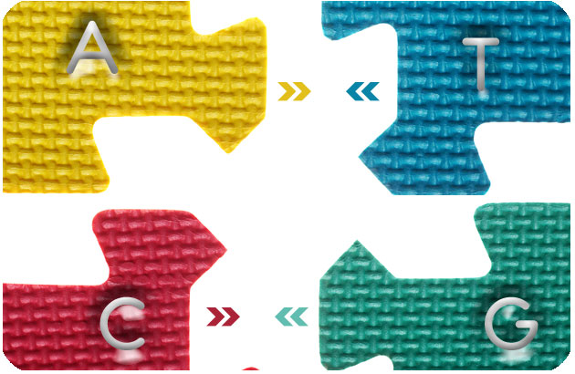
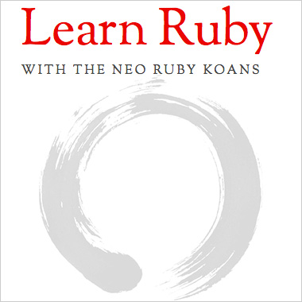

March 23, 2016 |
|
|  | Hamming Distance Exercise |
| Exercise goal: | |
| calculating the Hamming distance (the number of differing characters) between two strings. | |
| Process toward solution: | |
| I had some trouble getting started until I identified what was needed in the end. The distance is the sum of differences between strands. I began to think about how to compare the 2 strands (arrays) of nucleotides after verifying that they were comparable. Thought about doing an index_each but that failed. Tried printing results and wasn’t the answer. I used zip in another exercise so tried that here though I had the syntax wrong a couple of times. Printing things out along the way helped to see what the array methods were yielding. Ultimately zip method for arrays what I went with. |
March 18, 2016 |
|
|  | Ruby Koans review |
| Exercise goal: | |
| Review the Koans we've done to date. Make note of concepts that were still hard to grasp. | |
| Process toward solution: | |
| Redoing the koans was very helpful - though I got stuck on several items in about_strings and About_nil, yet again. I will be reviewing these over the weekend. about_nil: reminder on what inspect does—assert_equal nil, nil.inspect **inspect is a method that, by default, tells you the class name, the instance's object_id, and lists off the instance's instance variables. |